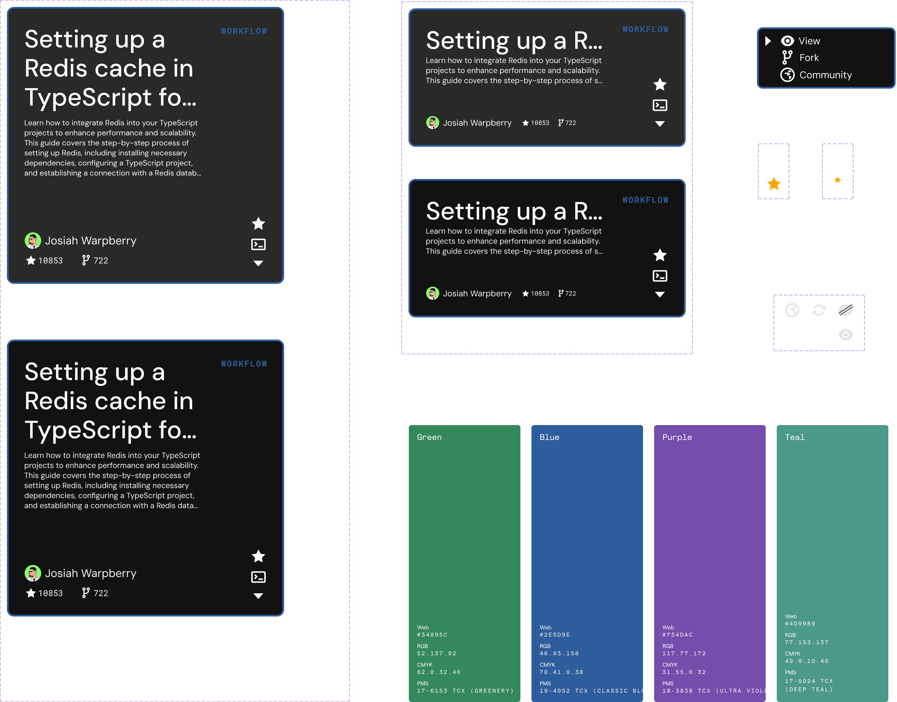
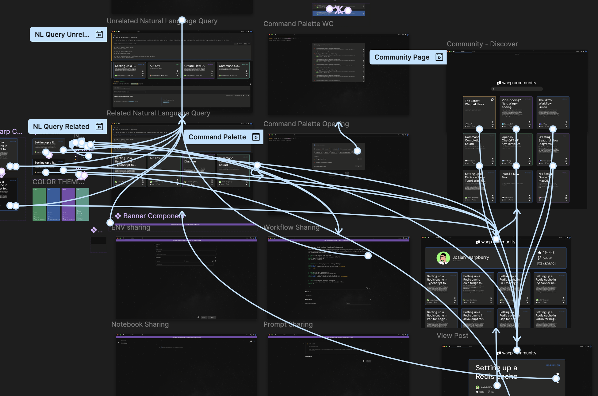

an iterative design for Warp community
connecting Warp users inside the terminal
-rw-r--r-- 1 spandan iterators 25H Apr 17 16:00 warp_community
warping data... 100%
writing code... 100%
[0] Overview & Background
Collaborators: Alexander Koong, Apoorva Talwalkar, Joshua Yang, Spandan Goel
Customer: Warp AI
Product: Warp AI Community Page

[1] Context
Warp is a startup modernizing the terminal with AI features like auto-completion and smart suggestions, optimizing developer workflows.
Through Brown’s CSCI 1300, we designed a community page for Warp, where users share workflows and automations-whether hobbyist or professional.
Present Factors: After onboarding, we surveyed competitors and identified key factors for our design.
| Existing Considerations | Customer Motivations | Issues with Existing Solutions |
|---|---|---|
| Users share solutions via fragmented channels (GitHub, Reddit, Discord) | Desire to improve productivity and learn from others | Hard to find high-quality, relevant examples; no streamlined implementation; lack of feedback |
[2] Project Goals
Goal: Design a community hub for users to post and view rules, plans, and prompt templates.
| Gameplan | Success Metrics |
|---|---|
|
|
[3] Sketching & Wireframing
Target Users: AI development professionals, from intermediate to advanced, working in small/medium teams, early adopters, seeking practical solutions and innovation.
We brainstormed and synthesized sketches, then created group wireframes to unify content into a single “post” entity for consistency.

[4] Iterating on Feedback
Feedback from Warp and Google Design emphasized connecting the community platform with the app, prioritizing success metrics, and simplifying the interface for speed and clarity.
| Warp Terminal Interactions | Warp Community Interactions |
|---|---|
|
|
[5] Hi-Fi Prototyping
We developed a design style guide for consistent components, focusing on seamless sharing and implementing flows between Terminal and Community.
Prototypes show content suggestions directly in the terminal, collapsible UI, and a searchable command palette for quick access to community objects.
[6] Results & Takeaways
Our final design, demonstrated in a Loom video, walks through implementation and sharing flows, and the web interface for Warp Community.
Feedback: Warp's team highlighted the need for keyboard accessibility and considering terminal-specific UI constraints. We discussed balancing AI-powered suggestions with reliable, user-validated content.
Team Takeaways: We learned the importance of iterative design, asking questions early, and aligning with company goals. Our process led to a product the Warp team was excited to receive.
Thanks to Warp and Google Design for their feedback and mentorship.
Designed with ❤️ in Providence